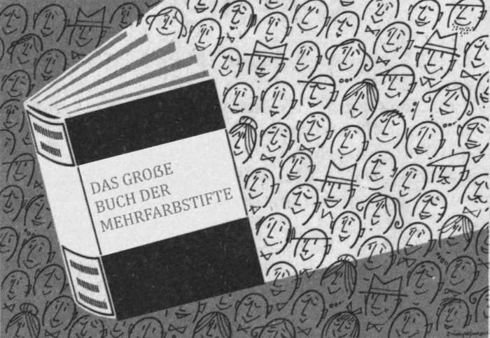

Historische Markensuche
Finde alte Eintragungen von 1950-1980
Stand: 27.02.2026

Kurzübersicht
Ein- und Ausgabe
Eingabe:- Ein Wort oder eine Regular Expression.
- Zeitraum in Jahren (max 1950-1980.
- Ein einziges PDF-Dokument mit allen PDF-Seiten mit gefundnenen Suchbegriffen.
- Zusätzlich zu jeder Seite ist die vorherige und folgende Seite inbegriffen.
1600 Warenzeichenblätter, 42GB Daten, >200.000 Seiten.
Zusatzinformationen
Über die Ausgabe
Das DPMA hat ein Archiv an Warenzeichenblättern. Doch es fehlt (meines Wissens nach) eine Suchfunktion.Wenn Sie mir Ihre Eingabe per Kontaktformular oder E-Mail mitteilen, führe ich die Suche durch und schicke Ihnen das Ergebnis.
Die Warenzeichenblätter sind von 1950-1980, aber es sind auch Marken von vor 1950 enthalten.
Das gilt, wenn diese wiederaufgenommen wurden. Deshalb lohnt sich die Suche auch nach älterem.
Es macht auch Spaß, einfach ein bisschen durch einen endlosen Strom an kreativen Bildchen und Textkreationen zu scrollen.